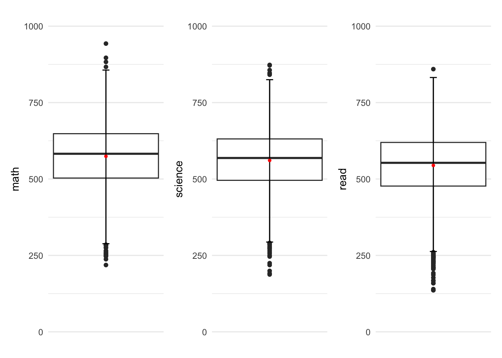
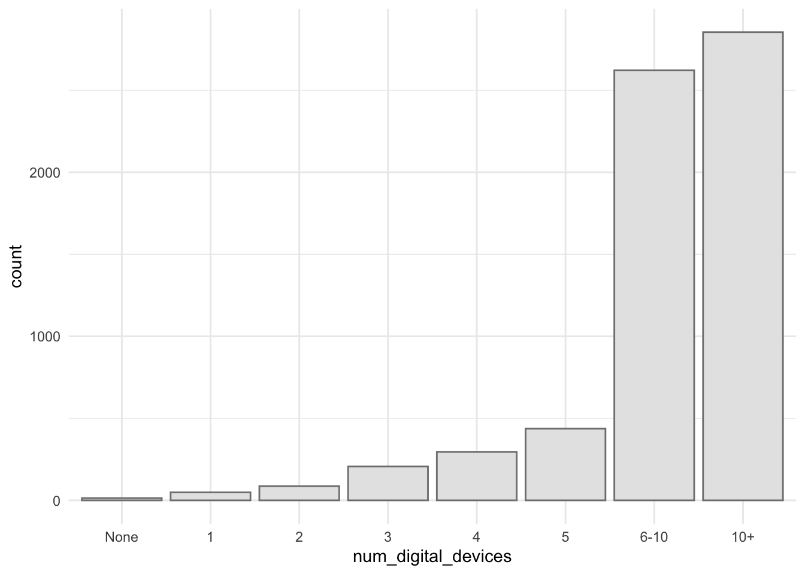
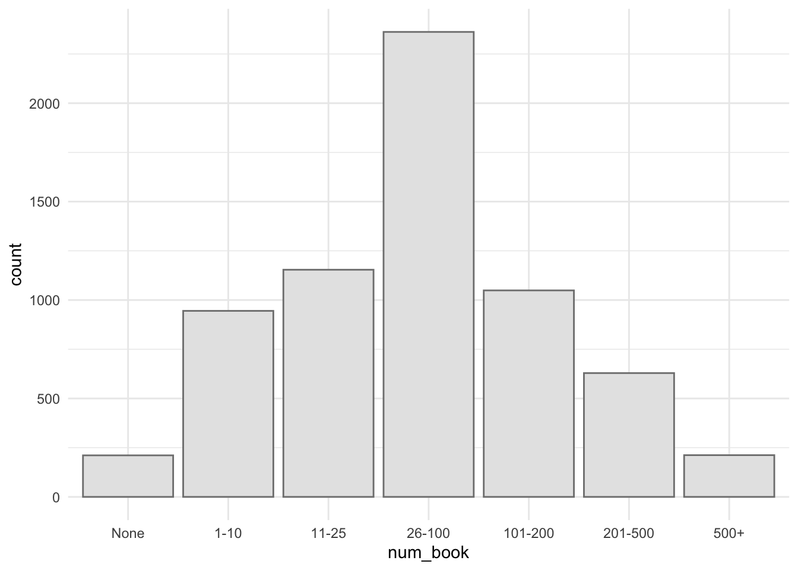

pacman::p_load(tidyverse, haven, ggrepel, patchwork, ggthemes, hrbrthemes)Take-Home Exercise 1
Prologue
In this Take home Exercise we are going to explore the data from PISA 2022 database released on 5 December 2022. The dataset is the result of questionnaire filled by the students.
Getting Started
Importing packages
In this take home exercise we are going to utilise several package
- tidyverse
- haven
- ggrepel
- patchwork
- ggthemes
- hrbrthemes
Importing dataset
Importing the data in sas data type
stu_qqq <- read_sas('data/cy08msp_stu_qqq.sas7bdat')filtering the data to singapore
stu_qqq_SG <- stu_qqq %>%
filter(CNT == "SGP")export the filtered dataset to rds to ease further data importing
write_rds(stu_qqq_SG, 'data/stu_qqq_SG.rds')read the exported rds
stu_qqq_SG <- read_rds('data/stu_qqq_SG.rds')Data Preparation
Variable preparations
filtering the columns that will be used for further analysis
rename the columns to a more understandable names
recode the answers of questions to a more descriptive measures
change the columns data type
stu_qqq <- stu_qqq_SG %>%
select(CNTSCHID,ST004D01T,PV1MATH,PV1SCIE,PV1READ,ST255Q01JA,ST251Q01JA,ST253Q01JA) %>%
rename(c(school_ID = "CNTSCHID",
gender = "ST004D01T",
math = "PV1MATH",
science = "PV1SCIE",
read = "PV1READ",
num_book = "ST255Q01JA",
num_transport = "ST251Q01JA",
num_digital_devices = "ST253Q01JA")) %>%
mutate(gender = recode(gender,
"1" = "Female",
"2" = "Male")) %>%
mutate(num_book = recode(num_book,
"1" = "None",
"2" = "1-10",
"3" = "11-25",
"4" = "26-100",
"5" = "101-200",
"6" = "201-500",
"7" = "500+")) %>%
mutate(num_transport = recode(num_transport,
"1" = "None",
"2" = "1",
"3" = "2",
"4" = "3+")) %>%
mutate(num_digital_devices = recode (num_digital_devices,
"1" = "None",
"2" = "1",
"3" = "2",
"4" = "3",
"5" = "4",
"6" = "5",
"7" = "6-10",
"8" = "10+"))
stu_qqq$school_ID <- as.factor(stu_qqq$school_ID)
stu_qqq$gender <- as.factor(stu_qqq$gender)
stu_qqq$num_book <- as.factor(stu_qqq$num_book)
stu_qqq$num_book <- factor(stu_qqq$num_book, levels = c('None','1-10','11-25','26-100','101-200','201-500','500+'))
stu_qqq$num_transport <- as.factor(stu_qqq$num_transport)
stu_qqq$num_transport <- factor(stu_qqq$num_transport, levels = c('None','1','2','3+'))
stu_qqq$num_digital_devices <- as.factor(stu_qqq$num_digital_devices)
stu_qqq$num_digital_devices <- factor(stu_qqq$num_digital_devices, levels = c('None','1','2','3','4','5','6-10','10+'))Overview
glimpse(stu_qqq)Rows: 6,606
Columns: 8
$ school_ID <fct> 70200052, 70200134, 70200112, 70200004, 70200152, …
$ gender <fct> Female, Male, Male, Male, Female, Female, Male, Ma…
$ math <dbl> 639.004, 697.191, 693.710, 427.317, 436.462, 569.9…
$ science <dbl> 710.634, 670.646, 666.095, 340.308, 456.333, 475.1…
$ read <dbl> 676.298, 625.585, 620.116, 381.495, 448.199, 469.4…
$ num_book <fct> 500+, 26-100, 26-100, 11-25, 1-10, 1-10, 26-100, 1…
$ num_transport <fct> 1, None, 1, None, 1, 1, 1, None, 2, 2, None, 1, 1,…
$ num_digital_devices <fct> 6-10, 10+, 6-10, 5, 6-10, 6-10, 10+, 10+, 10+, 6-1…Exploratory Data Analysis (EDA)
In this section 5 analysis will be performed to get insights and uncover truth of factors for singapore student perfomances.
1. Gender
the first factor that we are going to look into is gender.
ggplot(data = stu_qqq,
aes(x = gender)) +
geom_bar(width = 0.5,
color = "grey50",
fill = "grey90")+
theme_minimal()
from the distribution graph above can be seen that the questionnaire have similar number of male and female student.
from the graph below, can be seen that there are VERY SMALL differences between male and female science scores, with male have a SLIGHTLY HIGHER average and median score
Show the code
stats <- data.frame(gender = as.factor(c('Female','Male')),
mean = c(mean(stu_qqq$math[stu_qqq$gender == "Female"]),
mean(stu_qqq$math[stu_qqq$gender == "Male"])),
median = c(median(stu_qqq$math[stu_qqq$gender == "Female"]),
median(stu_qqq$math[stu_qqq$gender == "Male"])) )
ggplot(data = stu_qqq,
aes(y = math)) +
geom_histogram(bins = 10,
color = 'grey50',
fill = 'grey90') +
facet_wrap(~ gender) +
geom_hline(data = stats,
mapping = aes(yintercept=mean),
color = "red") +
geom_hline(data = stats,
mapping = aes(yintercept=median),
color = "blue") +
annotate(
'text',
x = Inf,
y = Inf,
hjust = 1,
vjust = 2.1,
label = paste("MEAN"),
color = "red"
) +
annotate(
'text',
x = Inf,
y = Inf,
hjust = 1,
vjust = 1,
label = paste("MEDIAN"),
color = "blue"
) +
theme_minimal()
from the graph below, can be seen that there are VERY SMALL differences between male and female science scores, with male have a SLIGHTLY HIGHER average and median score
Show the code
stats <- data.frame(gender = as.factor(c('Female','Male')),
mean = c(mean(stu_qqq$science[stu_qqq$gender == "Female"]),
mean(stu_qqq$science[stu_qqq$gender == "Male"])),
median = c(median(stu_qqq$science[stu_qqq$gender == "Female"]),
median(stu_qqq$science[stu_qqq$gender == "Male"])) )
ggplot(data = stu_qqq,
aes(y = science)) +
geom_histogram(bins = 10,
color = 'grey50',
fill = 'grey90') +
facet_wrap(~ gender) +
geom_hline(data = stats,
mapping = aes(yintercept=mean),
color = "red") +
geom_hline(data = stats,
mapping = aes(yintercept=median),
color = "blue") +
annotate(
'text',
x = Inf,
y = Inf,
hjust = 1,
vjust = 2.1,
label = paste("MEAN"),
color = "red"
) +
annotate(
'text',
x = Inf,
y = Inf,
hjust = 1,
vjust = 1,
label = paste("MEDIAN"),
color = "blue"
) +
theme_minimal()from the graph below, can be seen that there are VERY SMALL differences between male and female reading scores, with male have a SLIGHTLY LOWER average and median score
Show the code
stats <- data.frame(gender = as.factor(c('Female','Male')),
mean = c(mean(stu_qqq$read[stu_qqq$gender == "Female"]),
mean(stu_qqq$read[stu_qqq$gender == "Male"])),
median = c(median(stu_qqq$read[stu_qqq$gender == "Female"]),
median(stu_qqq$read[stu_qqq$gender == "Male"])) )
ggplot(data = stu_qqq,
aes(y = read)) +
geom_histogram(bins = 10,
color = 'grey50',
fill = 'grey90') +
facet_wrap(~ gender) +
geom_hline(data = stats,
mapping = aes(yintercept=mean),
color = "red") +
geom_hline(data = stats,
mapping = aes(yintercept=median),
color = "blue") +
annotate(
'text',
x = Inf,
y = Inf,
hjust = 1,
vjust = 2.1,
label = paste("MEAN"),
color = "red"
) +
annotate(
'text',
x = Inf,
y = Inf,
hjust = 1,
vjust = 1,
label = paste("MEDIAN"),
color = "blue"
) +
theme_minimal()
Overall, can be concluded that student’s performances are EQUAL no matter the gender is.
2. School
length(unique(stu_qqq$school_ID))[1] 164average_math_SG <- mean(stu_qqq$math)
average_scie_SG <- mean(stu_qqq$science)
average_read_SG <- mean(stu_qqq$read)
stu_qqq_sch <- stu_qqq %>%
group_by(school_ID) %>%
mutate(average_math_diff = abs(mean(math)-average_math_SG),
average_science_diff = abs(mean(science)-average_scie_SG),
average_read_diff = abs(mean(read)-average_read_SG)) %>%
select(school_ID, average_math_diff, average_science_diff, average_read_diff) %>%
unique() Show the code
p1 <- ggplot(data = stu_qqq_sch,
aes(y = average_math_diff)) +
geom_boxplot(width = 0.1) +
stat_boxplot(geom = "errorbar", width = 0.05) +
stat_summary(aes(x = 0),
geom = "point",
fun.y ="mean",
colour ="red",
size=1) +
ylim(c(0,220)) +
scale_x_continuous(NULL, breaks = NULL) +
theme_minimal()
p2 <- ggplot(data = stu_qqq_sch,
aes(y = average_science_diff)) +
geom_boxplot(width = 0.1) +
stat_boxplot(geom = "errorbar", width = 0.05) +
stat_summary(aes(x = 0),
geom = "point",
fun.y ="mean",
colour ="red",
size=1) +
ylim(c(0,220)) +
scale_x_continuous(NULL, breaks = NULL) +
theme_minimal()
p3 <- ggplot(data = stu_qqq_sch,
aes(y = average_read_diff)) +
geom_boxplot(width = 0.1) +
stat_boxplot(geom = "errorbar", width = 0.05) +
stat_summary(aes(x = 0),
geom = "point",
fun.y ="mean",
colour ="red",
size=1) +
ylim(c(0,220)) +
scale_x_continuous(NULL, breaks = NULL) +
theme_minimal()
p1|p2|p3
4. Social Economic 2: Vehicle Ownership
Show the code
ggplot(data = stu_qqq,
aes(x = num_transport)) +
geom_bar(color = "grey50",
fill = "grey90")+
theme_minimal()
Show wrangling code
stu_qqq_transport <- stu_qqq %>%
group_by(num_transport) %>%
mutate(average_math = mean(math),
average_science = mean(science),
average_read = mean(read)) %>%
select(num_transport, average_math, average_science, average_read) %>%
unique() Show the code
ggplot(data = stu_qqq_transport,
aes(x=num_transport, y=average_math)) +
geom_col(color = "grey50",
fill = "grey90") +
theme_minimal()
Show the code
ggplot(data = stu_qqq_transport,
aes(x=num_transport, y=average_science)) +
geom_col(color = "grey50",
fill = "grey90") +
theme_minimal()
Show the code
ggplot(data = stu_qqq_transport,
aes(x=num_transport, y=average_read)) +
geom_col(color = "grey50",
fill = "grey90") +
theme_minimal()
3. Social Economic 1: Book Ownership
Show the code
Show wrangling code
Show the code

Show the code
Show the code